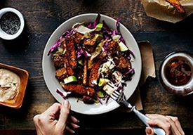
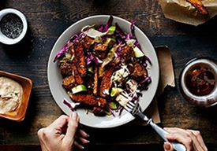

Calidad
*
Cuando se trata de la calidad somos implacables. Un producto no puede llevar el nombre La Boveda si no cumple con nuestras exigentes normas. Es así de sencillo. Nuestros productos son elaborados solo con los ingredientes más exquisitos: carne vacuna, porcina y especias de todas partes del mundo. Así lo hacíamos al principio y así lo seguimos haciendo hoy en día. Aunque otros prefieran usar piezas o subproductos, rellenos o sabores y colores artificiales, este sencillamente no nuestro estilo. Nuestra meta es convertirnos en la marca con la cual los consumidores pueden contar para obtener productos de charcutería de la más alta calidad en América.